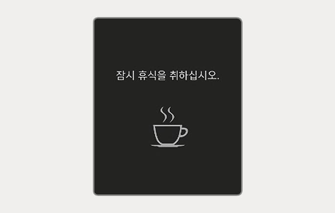
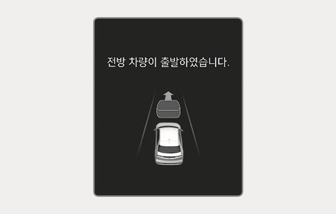

운전자 주의 경고 작동
휴식 권유

2C_TakeABreakMessage
운전자 주의 수준이 일정 수준 이하로 떨어지면 휴식 권유 문구 표시 및 부주의 (
-
주행 시간이 4분 이내이거나 휴식을 권유한 후 4분 이내인 경우에는 휴식을 권유하지 않을 수 있습니다.
-
운전자의 운전 스타일 및 습관에 따라 피곤함을 느끼지 않는 상황에서도 휴식을 권유할 수 있습니다.
-
운전자 주의 경고는 운전자를 위한 보조 기능이며 운전자의 부주의 상태를 판단하지 못할 수 있습니다.
-
운전자 주의 경고가 휴식을 권유하지 않더라도 피곤함을 느낀다면 안전한 장소에 주정차한 후 휴식을 취하십시오.
전방 차량 출발 알림

2C_LeadingVehicleDepartureInfo
정차 중에 앞 차량이 출발하면 알림 문구가 표시되고 알림음이 울립니다.
안전벨트 미착용 등 다른 경고음이 우선하여 발생하는 동안에는 운전자 주의 경고의 알림음이 발생하지 않을 수 있습니다.
-
전방 차량 출발 알림 기능은 운전자를 위한 보조 기능이며 실제 전방 차량이 출발하더라도 알림을 제공하지 않을 수 있습니다.
-
전방 차량 출발 알림 기능이 전방 차량 출발 상황을 알려주더라도 직접 주변 상황을 판단한 후 출발하십시오.